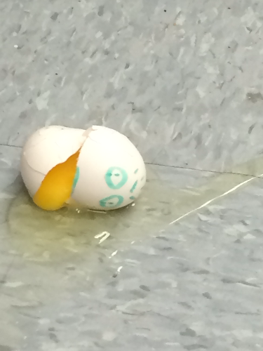

I'm a high school senior nearly finished with my year (three more weeks to go woo!). My better subjects are in math and science. Aside from my scholared character, I enjoy video games of all kinds, but I'm more experienced with platformers from Nintendo consoles and PC MOBAS. I like Marvel, Disney, Pixar, and Netflix Originals; I also like Animes (yes call me a weeb for all I care); but under overall themes for stories I enjoy Action, Comedy, Drama (but I'm very picky about it when it comes to quality or impact by it), Isekai: Different World (again, quality/impact), School (quality/impact), Adventure, but most importantly - a great story, an interesting them, or both. I'm tired a lot of the time, even if I carry enough energy like the average person my face will be hardly expressive or smiling when conversations are dull, but that's also because I keep myself reserved. I'm largely, if not fairly, philosophical, verbose, and mentally mature when it comes to certain dilemmas for others. I won't hesitate to be rude, but I'm awfully careful about how I present my character regardless of presence or hypocrisy. I usually see any new situation to call for a new perspective of things, or relate it to something noteworthy of the past. The rest about me is up to others to find out and/or understand.